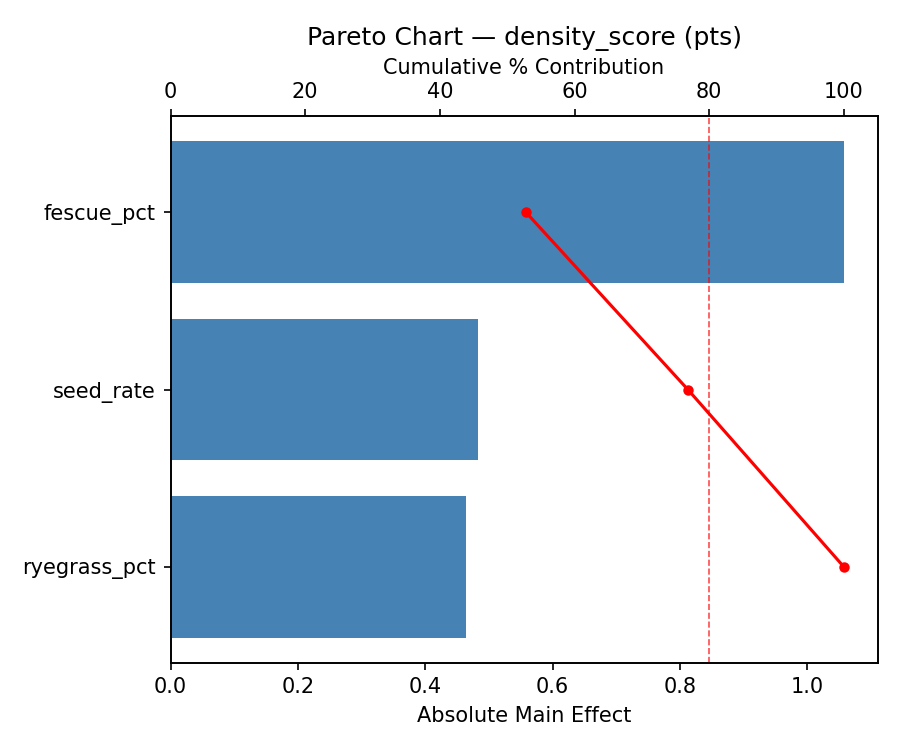
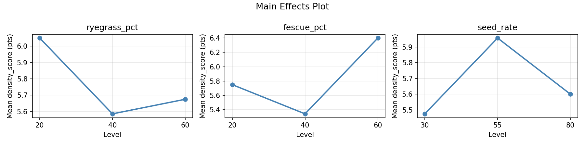
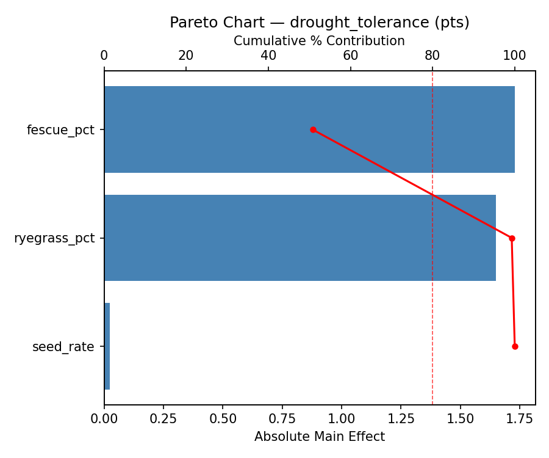
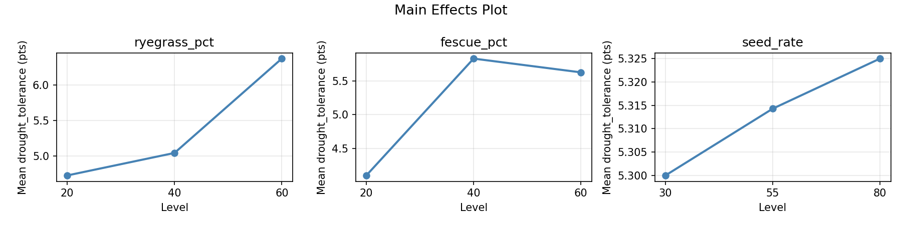
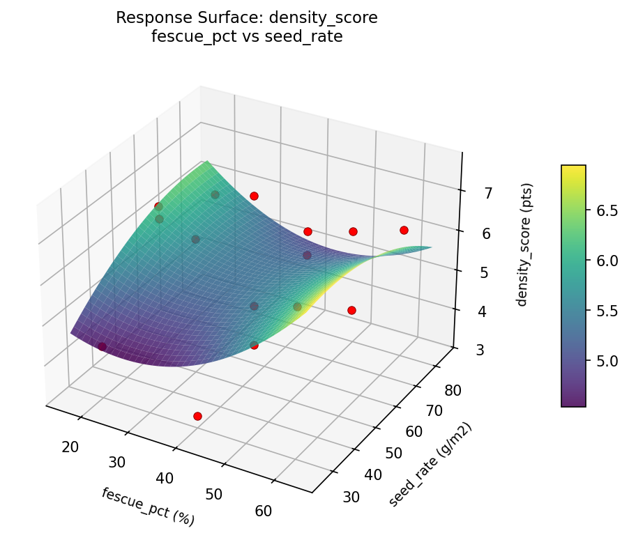
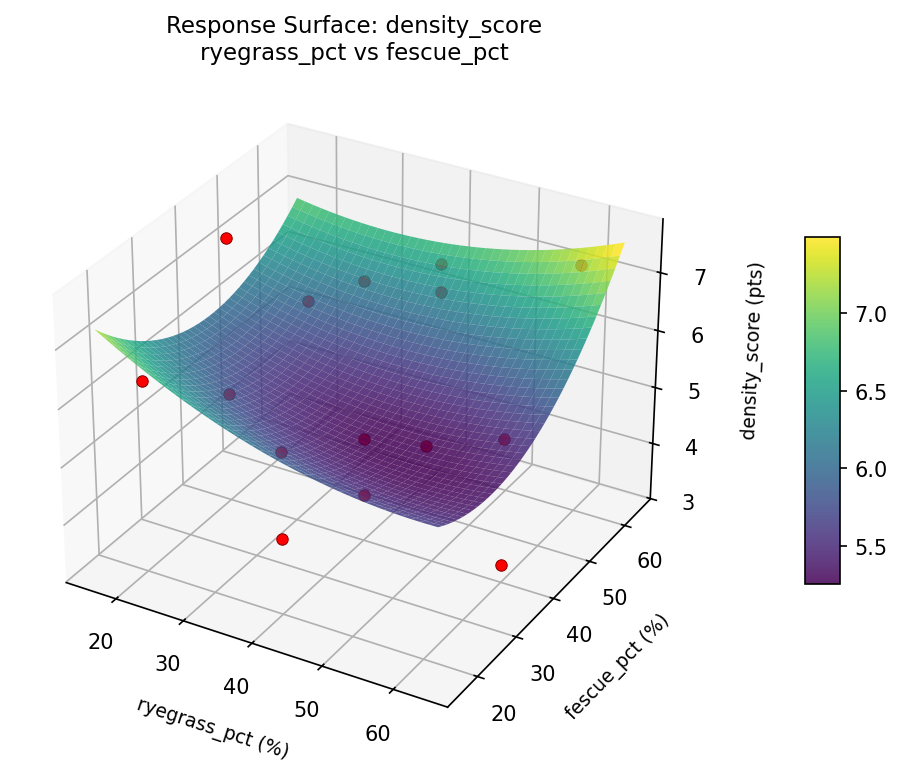
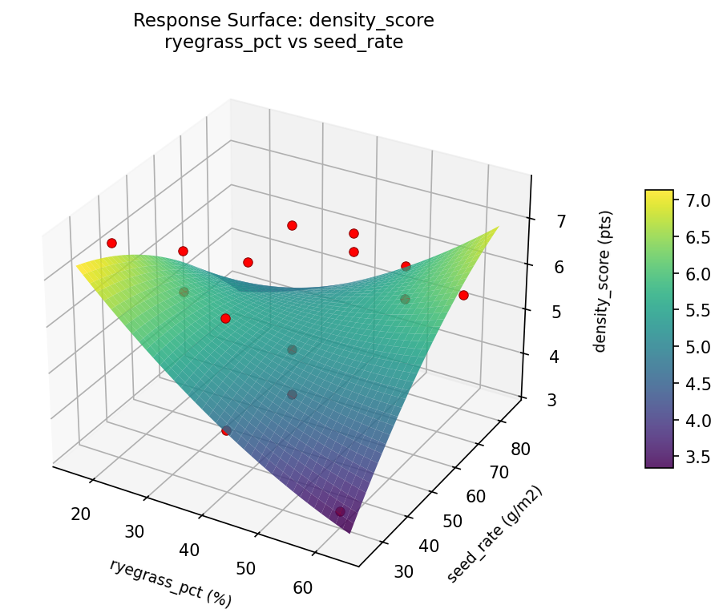
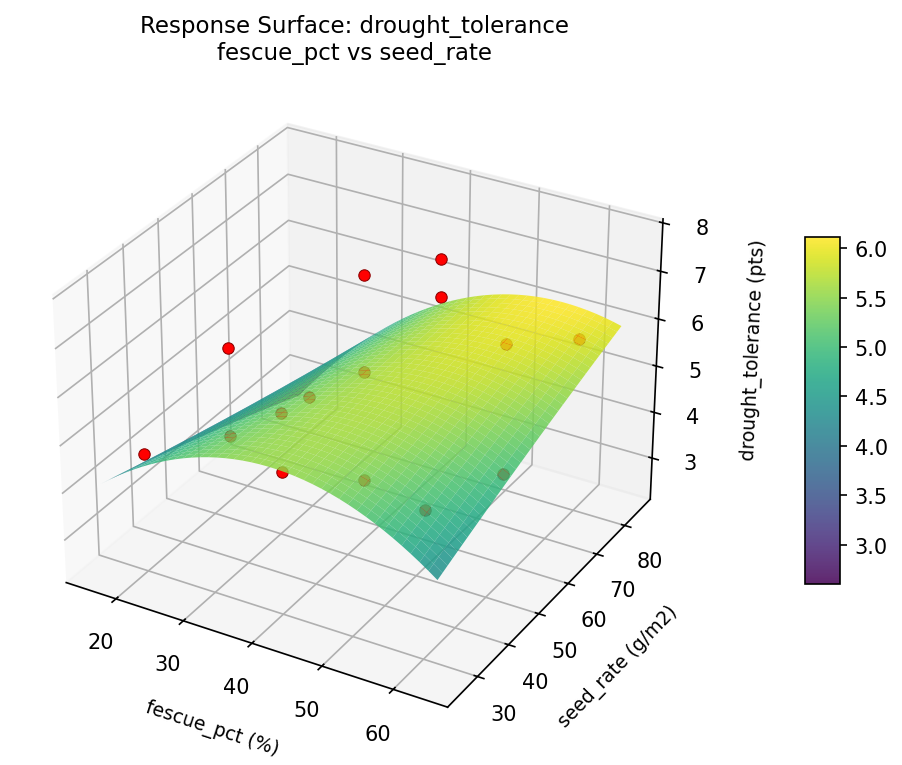
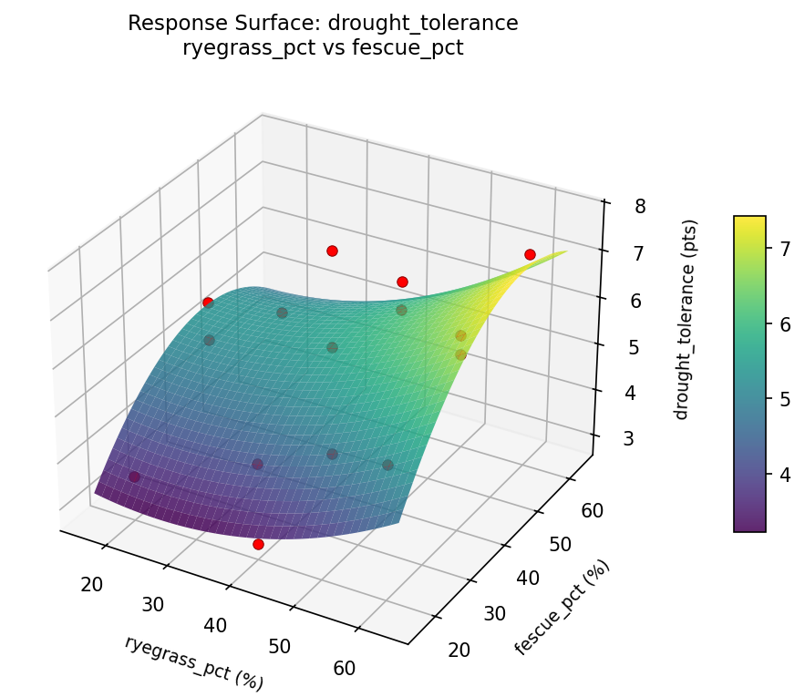
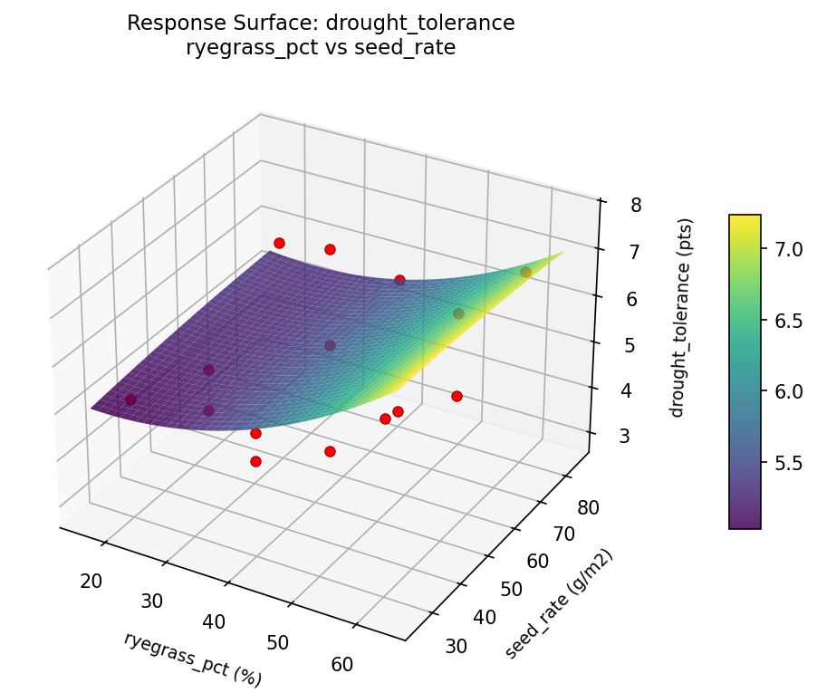

Summary
This experiment investigates lawn grass seed mix. Box-Behnken design to optimize turf density and drought tolerance by tuning perennial ryegrass ratio, fescue ratio, and seeding rate.
The design varies 3 factors: ryegrass pct (%), ranging from 20 to 60, fescue pct (%), ranging from 20 to 60, and seed rate (g/m2), ranging from 30 to 80. The goal is to optimize 2 responses: density score (pts) (maximize) and drought tolerance (pts) (maximize). Fixed conditions held constant across all runs include remaining bluegrass pct = balance, mowing height mm = 50.
A Box-Behnken design was chosen because it efficiently fits quadratic models with 3 continuous factors while avoiding extreme corner combinations — requiring only 15 runs instead of the 8 needed for a full factorial at two levels.
Quadratic response surface models were fitted to capture potential curvature and factor interactions. The RSM contour plots below visualize how pairs of factors jointly affect each response.
Key Findings
For density score, the most influential factors were fescue pct (52.8%), seed rate (24.1%), ryegrass pct (23.2%). The best observed value was 7.6 (at ryegrass pct = 20, fescue pct = 60, seed rate = 55).
For drought tolerance, the most influential factors were fescue pct (50.8%), ryegrass pct (48.5%), seed rate (0.7%). The best observed value was 7.7 (at ryegrass pct = 40, fescue pct = 60, seed rate = 80).
Recommended Next Steps
- Run confirmation experiments at the predicted optimal settings to validate the model.
- Consider whether any fixed factors should be varied in a future study.
Experimental Setup
Factors
| Factor | Low | High | Unit |
|---|
ryegrass_pct | 20 | 60 | % |
fescue_pct | 20 | 60 | % |
seed_rate | 30 | 80 | g/m2 |
Fixed: remaining_bluegrass_pct = balance, mowing_height_mm = 50
Responses
| Response | Direction | Unit |
|---|
density_score | ↑ maximize | pts |
drought_tolerance | ↑ maximize | pts |
Configuration
{
"metadata": {
"name": "Lawn Grass Seed Mix",
"description": "Box-Behnken design to optimize turf density and drought tolerance by tuning perennial ryegrass ratio, fescue ratio, and seeding rate"
},
"factors": [
{
"name": "ryegrass_pct",
"levels": [
"20",
"60"
],
"type": "continuous",
"unit": "%"
},
{
"name": "fescue_pct",
"levels": [
"20",
"60"
],
"type": "continuous",
"unit": "%"
},
{
"name": "seed_rate",
"levels": [
"30",
"80"
],
"type": "continuous",
"unit": "g/m2"
}
],
"fixed_factors": {
"remaining_bluegrass_pct": "balance",
"mowing_height_mm": "50"
},
"responses": [
{
"name": "density_score",
"optimize": "maximize",
"unit": "pts"
},
{
"name": "drought_tolerance",
"optimize": "maximize",
"unit": "pts"
}
],
"settings": {
"operation": "box_behnken",
"test_script": "use_cases/101_lawn_grass_mix/sim.sh"
}
}
Experimental Matrix
The Box-Behnken Design produces 15 runs. Each row is one experiment with specific factor settings.
| Run | ryegrass_pct | fescue_pct | seed_rate |
|---|
| 1 | 40 | 20 | 30 |
| 2 | 40 | 40 | 55 |
| 3 | 60 | 40 | 80 |
| 4 | 60 | 40 | 30 |
| 5 | 40 | 40 | 55 |
| 6 | 40 | 40 | 55 |
| 7 | 20 | 40 | 80 |
| 8 | 60 | 20 | 55 |
| 9 | 40 | 20 | 80 |
| 10 | 60 | 60 | 55 |
| 11 | 20 | 40 | 30 |
| 12 | 40 | 60 | 80 |
| 13 | 20 | 20 | 55 |
| 14 | 20 | 60 | 55 |
| 15 | 40 | 60 | 30 |
Step-by-Step Workflow
1
Preview the design
$ python doe.py info --config use_cases/101_lawn_grass_mix/config.json
2
Generate the runner script
$ python doe.py generate --config use_cases/101_lawn_grass_mix/config.json \
--output use_cases/101_lawn_grass_mix/results/run.sh --seed 42
3
Execute the experiments
$ bash use_cases/101_lawn_grass_mix/results/run.sh
4
Analyze results
$ python doe.py analyze --config use_cases/101_lawn_grass_mix/config.json
5
Get optimization recommendations
$ python doe.py optimize --config use_cases/101_lawn_grass_mix/config.json
6
Generate the HTML report
$ python doe.py report --config use_cases/101_lawn_grass_mix/config.json \
--output use_cases/101_lawn_grass_mix/results/report.html
Features Exercised
| Feature | Value |
|---|
| Design type | box_behnken |
| Factor types | continuous (all 3) |
| Arg style | double-dash |
| Responses | 2 (density_score ↑, drought_tolerance ↑) |
| Total runs | 15 |
Analysis Results
Generated from actual experiment runs using the DOE Helper Tool.
Response: density_score
Top factors: fescue_pct (52.8%), seed_rate (24.1%), ryegrass_pct (23.2%).
Pareto Chart

Main Effects Plot

Response: drought_tolerance
Top factors: fescue_pct (50.8%), ryegrass_pct (48.5%), seed_rate (0.7%).
Pareto Chart

Main Effects Plot

Response Surface Plots
3D surfaces fitted with quadratic RSM. Red dots are observed data points.
density score fescue pct vs seed rate

density score ryegrass pct vs fescue pct

density score ryegrass pct vs seed rate

drought tolerance fescue pct vs seed rate

drought tolerance ryegrass pct vs fescue pct

drought tolerance ryegrass pct vs seed rate

Full Analysis Output
RSM surface: rsm_density_score_ryegrass_pct_vs_fescue_pct.png
RSM surface: rsm_density_score_ryegrass_pct_vs_seed_rate.png
RSM surface: rsm_density_score_fescue_pct_vs_seed_rate.png
RSM surface: rsm_drought_tolerance_ryegrass_pct_vs_fescue_pct.png
RSM surface: rsm_drought_tolerance_ryegrass_pct_vs_seed_rate.png
RSM surface: rsm_drought_tolerance_fescue_pct_vs_seed_rate.png
=== Main Effects: density_score ===
Factor Effect Std Error % Contribution
--------------------------------------------------------------
fescue_pct 1.0571 0.3432 52.8%
seed_rate 0.4821 0.3432 24.1%
ryegrass_pct 0.4643 0.3432 23.2%
=== Summary Statistics: density_score ===
ryegrass_pct:
Level N Mean Std Min Max
------------------------------------------------------------
20 4 6.0500 1.1846 4.9000 7.6000
40 7 5.5857 1.3409 3.8000 7.5000
60 4 5.6750 1.7481 3.3000 7.3000
fescue_pct:
Level N Mean Std Min Max
------------------------------------------------------------
20 4 5.7500 1.0214 4.3000 6.6000
40 7 5.3429 1.6742 3.3000 7.6000
60 4 6.4000 0.8042 5.4000 7.3000
seed_rate:
Level N Mean Std Min Max
------------------------------------------------------------
30 4 5.4750 2.0106 3.3000 7.6000
55 7 5.9571 1.3551 3.8000 7.5000
80 4 5.6000 0.5477 4.9000 6.2000
=== Main Effects: drought_tolerance ===
Factor Effect Std Error % Contribution
--------------------------------------------------------------
fescue_pct 1.7286 0.3566 50.8%
ryegrass_pct 1.6500 0.3566 48.5%
seed_rate 0.0250 0.3566 0.7%
=== Summary Statistics: drought_tolerance ===
ryegrass_pct:
Level N Mean Std Min Max
------------------------------------------------------------
20 4 4.7250 1.0210 3.5000 5.9000
40 7 5.0429 1.6113 2.9000 7.7000
60 4 6.3750 0.7274 5.4000 7.1000
fescue_pct:
Level N Mean Std Min Max
------------------------------------------------------------
20 4 4.1000 1.1165 2.9000 5.4000
40 7 5.8286 1.3500 3.4000 7.7000
60 4 5.6250 1.1383 4.4000 7.1000
seed_rate:
Level N Mean Std Min Max
------------------------------------------------------------
30 4 5.3000 0.7165 4.6000 6.3000
55 7 5.3143 1.6747 3.4000 7.7000
80 4 5.3250 1.6661 2.9000 6.7000
Pareto chart (density_score): use_cases/101_lawn_grass_mix/results/analysis/pareto_density_score.png
Pareto chart (drought_tolerance): use_cases/101_lawn_grass_mix/results/analysis/pareto_drought_tolerance.png
Main effects (density_score): use_cases/101_lawn_grass_mix/results/analysis/main_effects_density_score.png
Main effects (drought_tolerance): use_cases/101_lawn_grass_mix/results/analysis/main_effects_drought_tolerance.png
Optimization Recommendations
=== Optimization: density_score ===
Direction: maximize
Best observed run: #3
ryegrass_pct = 20
fescue_pct = 60
seed_rate = 55
Value: 7.6
RSM Model (linear, R² = 0.6394, Adj R² = 0.5411):
Coefficients:
intercept +5.7333
ryegrass_pct -1.1250
fescue_pct -0.1750
seed_rate -0.8250
RSM Model (quadratic, R² = 0.8972, Adj R² = 0.7123):
Coefficients:
intercept +5.7333
ryegrass_pct -1.1250
fescue_pct -0.1750
seed_rate -0.8250
ryegrass_pct*fescue_pct -0.6500
ryegrass_pct*seed_rate +0.3000
fescue_pct*seed_rate +0.4000
ryegrass_pct^2 +0.0833
fescue_pct^2 +0.6333
seed_rate^2 -0.7167
Curvature analysis:
seed_rate coef=-0.7167 concave (has a maximum)
fescue_pct coef=+0.6333 convex (has a minimum)
ryegrass_pct coef=+0.0833 negligible curvature
Notable interactions:
ryegrass_pct*fescue_pct coef=-0.6500 (antagonistic)
fescue_pct*seed_rate coef=+0.4000 (synergistic)
Predicted optimum (from quadratic model):
ryegrass_pct = 20
fescue_pct = 60
seed_rate = 55
Predicted value: 8.0500
Model quality: Good fit — general trends are captured, some noise remains.
Factor importance:
1. ryegrass_pct (effect: 2.2, contribution: 47.3%)
2. seed_rate (effect: 1.7, contribution: 34.7%)
3. fescue_pct (effect: 0.9, contribution: 18.0%)
=== Optimization: drought_tolerance ===
Direction: maximize
Best observed run: #14
ryegrass_pct = 40
fescue_pct = 60
seed_rate = 80
Value: 7.7
RSM Model (linear, R² = 0.0445, Adj R² = -0.2161):
Coefficients:
intercept +5.3133
ryegrass_pct +0.2625
fescue_pct +0.2750
seed_rate -0.0625
RSM Model (quadratic, R² = 0.7845, Adj R² = 0.3965):
Coefficients:
intercept +4.8667
ryegrass_pct +0.2625
fescue_pct +0.2750
seed_rate -0.0625
ryegrass_pct*fescue_pct +0.1500
ryegrass_pct*seed_rate +1.4250
fescue_pct*seed_rate +1.1000
ryegrass_pct^2 -0.5958
fescue_pct^2 +1.1292
seed_rate^2 +0.3042
Curvature analysis:
fescue_pct coef=+1.1292 convex (has a minimum)
ryegrass_pct coef=-0.5958 concave (has a maximum)
seed_rate coef=+0.3042 convex (has a minimum)
Notable interactions:
ryegrass_pct*seed_rate coef=+1.4250 (synergistic)
fescue_pct*seed_rate coef=+1.1000 (synergistic)
Predicted optimum (from quadratic model):
ryegrass_pct = 40
fescue_pct = 60
seed_rate = 80
Predicted value: 7.6125
Model quality: Good fit — general trends are captured, some noise remains.
Factor importance:
1. fescue_pct (effect: 1.4, contribution: 52.5%)
2. ryegrass_pct (effect: 1.0, contribution: 35.4%)
3. seed_rate (effect: 0.3, contribution: 12.1%)